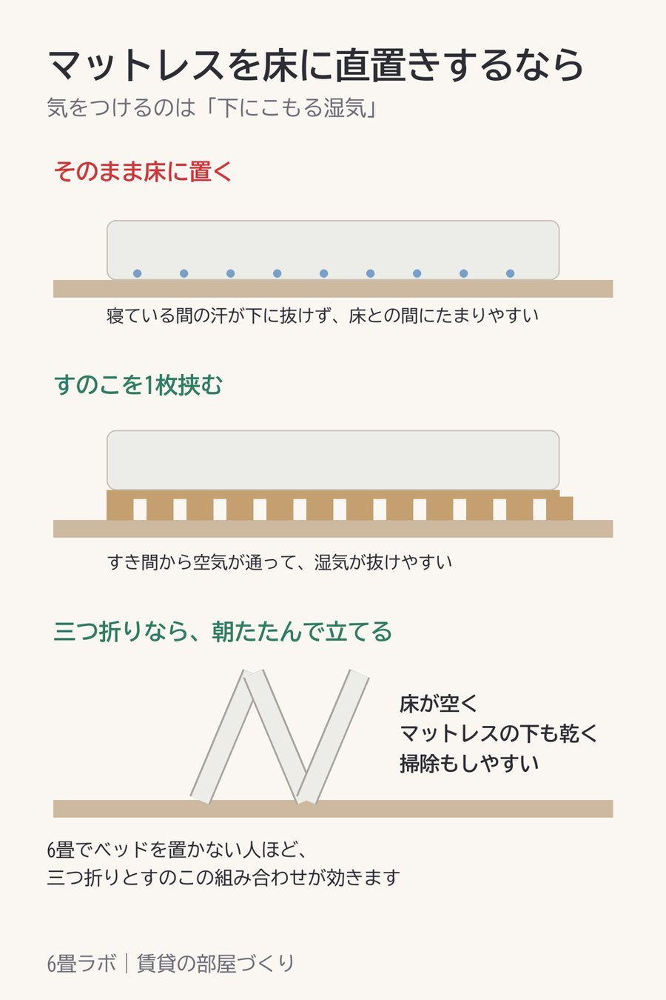

マットレスを床に直置きするなら、湿気だけは気にしておく
この記事には楽天アフィリエイトのリンクが含まれています。

ベッドを置かないと、6畳でも床がかなり空きます。そのかわり気になるのが湿気です。
寝ている間の汗は、下へ抜けにくいんです。床とマットレスのあいだにこもって、敷きっぱなしだと乾く時間がありません。
手軽なのは、すのこを1枚挟むこと。すき間から空気が通るので、湿気が抜けやすくなります。
三つ折りのマットレスなら、朝たたんで立てておくのもいいです。床が空くし、マットレスの下も乾く。掃除もしやすくなります。ベッドなしの6畳だと、この2つを組み合わせるのがいちばん手軽だと思います。